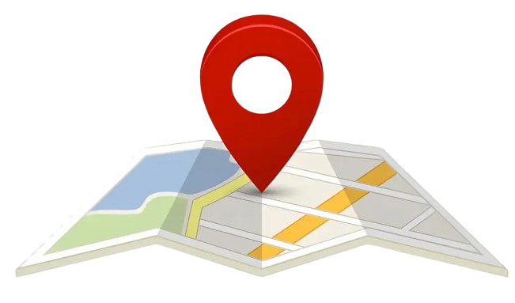
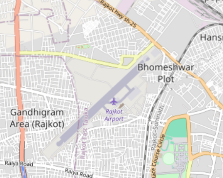
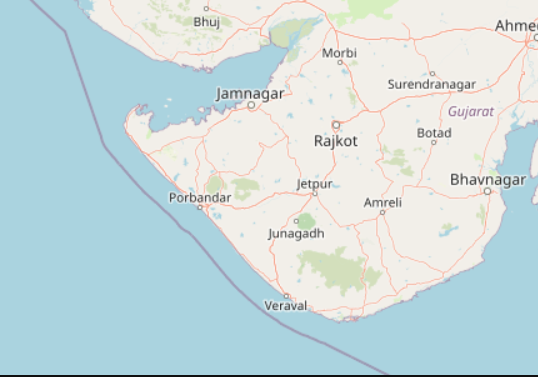

Global
Explore the World Map !
A global map offers a complete view of the Earth's surface, enabling users to zoom, pan, and access detailed geographical and political information interactively.
World Map
A global map provides an extensive view of the Earth, allowing users to zoom in and out, pan across continents, and interact with various layers. It displays detailed geographical
and political information, making it a comprehensive tool for navigation and exploration.

Location
Search desired locations !
The Search feature on a map provides directions, route planning, and real-time updates, guiding users from one location to another efficiently and accurately.
Search Tool
The Location helps in finding the desired places of choice, with accuracy and precision. The co-ordinates allow the map to precisely display the desired cities and districts.

Pins
Add markers to your map !
Add pins on a map to mark and save specific locations, making it easier to identify, revisit, or share these points of interest.
Pin-point
Adding pins combined with the search functionality can bring precision to mark your location. Look forward to additional content displayed on specific locations as well.

Precision
Detailed maps and roads !
Look Forward to detailed maps and content throughout the map, including roads, societies and check-points.
In-Depth Details
Map details include societal names, cities, districts, and roads, providing a comprehensive view of geographical and administrative boundaries. Users can explore neighborhoods and identify major roads offering valuable context for navigation and planning.

Borders
Bounded and Bordered
Learn and understand the borders of the world map - including countries, states and cities.
Water borders
The country water borders define a nation's coastline, separating its land area from adjacent seas and oceans. Adding a detailed functionality of displaying water boudaries to countries bring a better idea about the countries and their borders.